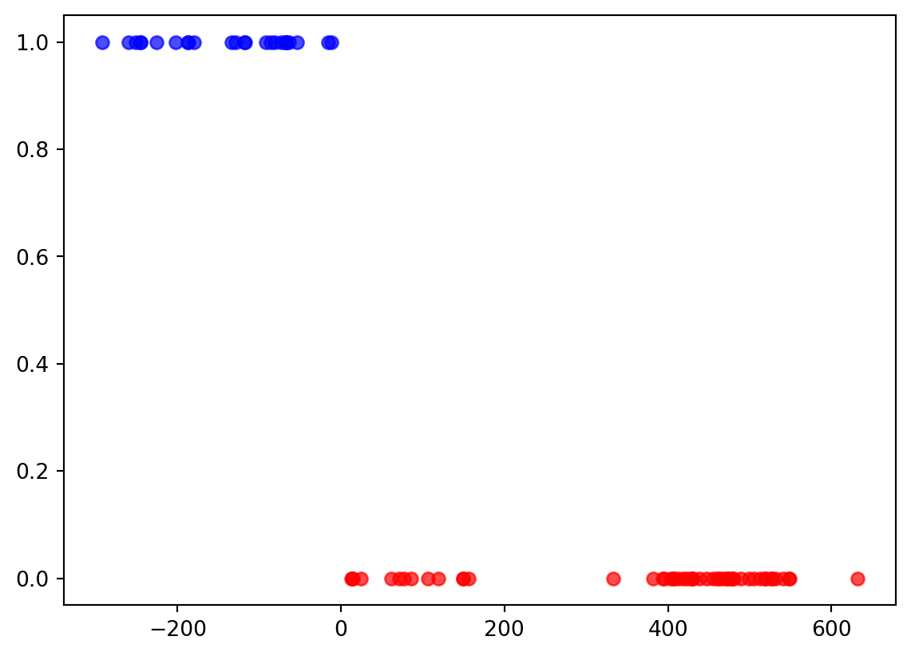
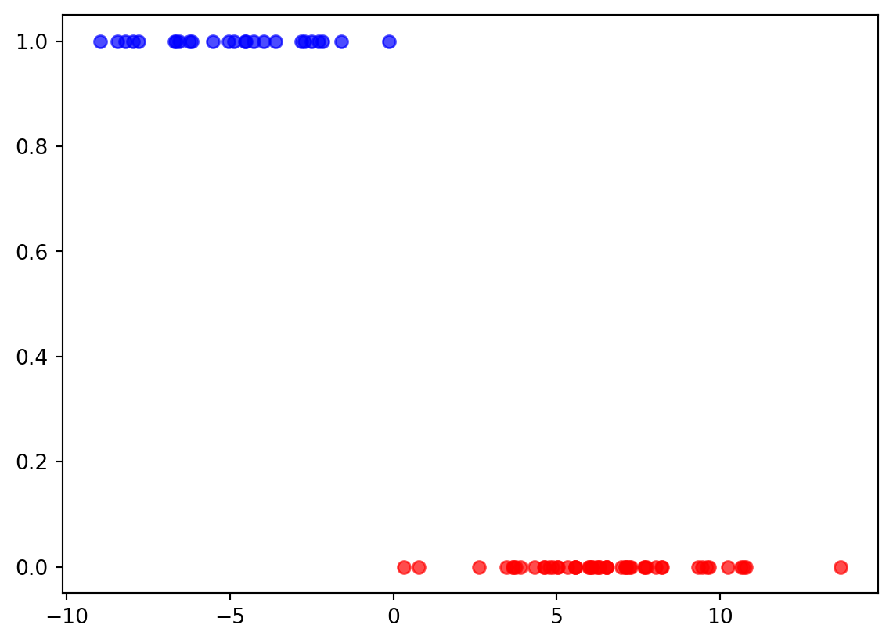

import numpy as np
import pandas as pd
import matplotlib.pyplot as plt
from sklearn.linear_model import LogisticRegression
from sklearn.metrics import accuracy_scoreProblem 8
Task a
train_peng = pd.read_csv("data_E2/penguins_train.csv")
test_peng = pd.read_csv("data_E2/penguins_test.csv")
X_train = train_peng.drop(columns=["species"])
y_train = train_peng["species"]
X_test = test_peng.drop(columns=["species"])
y_test = test_peng["species"]model = LogisticRegression(penalty=None)
model.fit(X_train, y_train)
y_pred = model.predict(X_test)test_accuracy = accuracy_score(y_test, y_pred)
print("Test Accuracy:", test_accuracy)
train_accuracy = accuracy_score(y_train, model.predict(X_train))
print("Train Accuracy:", train_accuracy)
coefficients = model.coef_
print("Coefficients:" , coefficients)Test Accuracy: 0.9333333333333333
Train Accuracy: 1.0
Coefficients: [[ 2.14948051e+01 -8.18056613e+01 1.97487470e+00 4.78735619e-02]]t = model.decision_function(X_train)
adelie_index = np.where(model.classes_ == "Adelie")[0][0]
p_adelie = model.predict_proba(X_train)[:, adelie_index]
mask_adelie = (y_train == "Adelie")
plt.figure(figsize=(7, 5))
plt.scatter(t[mask_adelie], p_adelie[mask_adelie], color="blue", label="Adelie", alpha=0.7)
plt.scatter(t[~mask_adelie], p_adelie[~mask_adelie], color="red", label="notAdelie", alpha=0.7)
plt.show()
Task b
model_reg = LogisticRegression(penalty="l1", solver="liblinear")
model_reg.fit(X_train, y_train)
y_pred_reg = model_reg.predict(X_test)test_accuracy = accuracy_score(y_test, y_pred_reg)
print("Test Accuracy:", test_accuracy)
train_accuracy = accuracy_score(y_train, model_reg.predict(X_train))
print("Train Accuracy:", train_accuracy)
coefficients = model_reg.coef_
print("Coefficients:" , coefficients)Test Accuracy: 0.9733333333333334
Train Accuracy: 1.0
Coefficients: [[ 9.58163431e-01 -1.69491732e+00 -3.39442812e-02 -1.12260309e-03]]t = model_reg.decision_function(X_train)
adelie_index = np.where(model.classes_ == "Adelie")[0][0]
p_adelie = model.predict_proba(X_train)[:, adelie_index]
mask_adelie = (y_train == "Adelie")
plt.figure(figsize=(7, 5))
plt.scatter(t[mask_adelie], p_adelie[mask_adelie], color="blue", label="Adelie", alpha=0.7)
plt.scatter(t[~mask_adelie], p_adelie[~mask_adelie], color="red", label="notAdelie", alpha=0.7)
plt.show()
Task c
The coefficients are large because the model is trying to push probabilities to 0 or 1. Coefficients: [[ 2.14948051e+01 -8.18056613e+01 1.97487470e+00 4.78735619e-02]]
Problem 9
Problem 10
Task a
train_peng = train_peng
test_peng = test_peng
X_train = train_peng.drop(columns=["species"])
y_train = train_peng["species"]
X_test = test_peng.drop(columns=["species"])
y_test = test_peng["species"]train_peng_1_mean = X_train[train_peng["species"] == "Adelie"].mean()
train_peng_0_mean = X_train[train_peng["species"] != "Adelie"].mean()
train_peng_1_std = X_train[train_peng["species"] == "Adelie"].std()
train_peng_0_std = X_train[train_peng["species"] != "Adelie"].std()
print("Class 1 Mean:\n", train_peng_1_mean,"\n----")
print("Class 0 Mean:\n", train_peng_0_mean,"\n----")
print("Class 1 Std:\n", train_peng_1_std,"\n----")
print("Class 0 Std:\n", train_peng_0_std,"\n----")Class 1 Mean:
bill_length_mm 38.124
bill_depth_mm 18.336
flipper_length_mm 188.880
body_mass_g 3576.000
dtype: float64
----
Class 0 Mean:
bill_length_mm 47.818
bill_depth_mm 15.890
flipper_length_mm 211.300
body_mass_g 4657.000
dtype: float64
----
Class 1 Std:
bill_length_mm 2.781528
bill_depth_mm 1.204118
flipper_length_mm 6.320074
body_mass_g 461.343148
dtype: float64
----
Class 0 Std:
bill_length_mm 3.599472
bill_depth_mm 1.965441
flipper_length_mm 11.792855
body_mass_g 787.531017
dtype: float64
----laplce_smoothing = 1
prior_1 = (len(X_train[train_peng["species"] == "Adelie"]) + laplce_smoothing) / (len(X_train) + 2 * laplce_smoothing)
prior_0 = (len(X_train[train_peng["species"] != "Adelie"]) + laplce_smoothing) / (len(X_train) + 2 * laplce_smoothing)
print("Prior 1:", prior_1)
print("Prior 0:", prior_0)Prior 1: 0.33766233766233766
Prior 0: 0.6623376623376623Task b
\[ \begin{aligned} P(A \mid X) &= \frac{P(X \mid A)\,P(A)}{P(X)} \\[6pt] &= \frac{ P(\text{bill\_length} \mid A)\, P(\text{bill\_depth} \mid A)\, P(\text{flipper\_length} \mid A)\, P(\text{body\_mass} \mid A)\, P(A) }{P(X)} \\[6pt] &= \frac{ \left[ \prod_{j=1}^{4} \mathcal{N}(x_j \mid \mu_{A,j}, \sigma_{A,j}) \right] P(A) }{P(X)} \end{aligned} \]